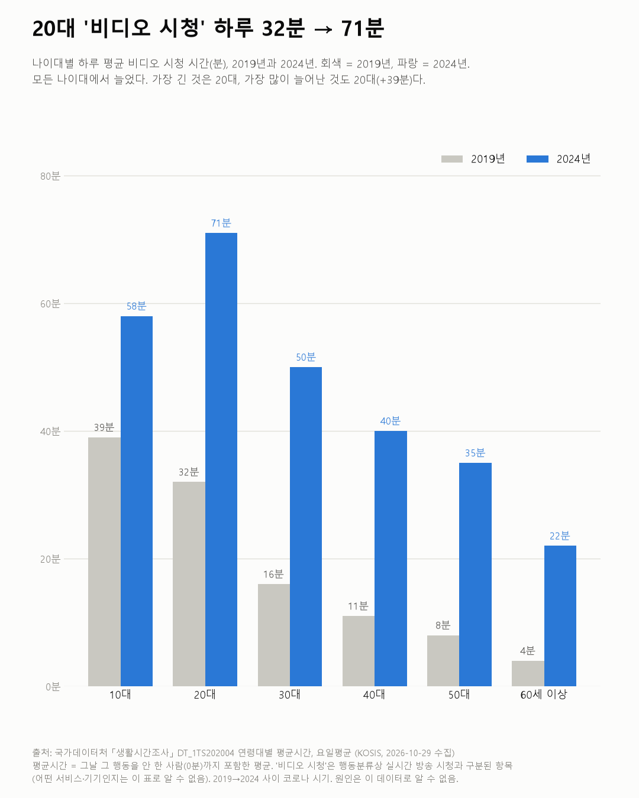
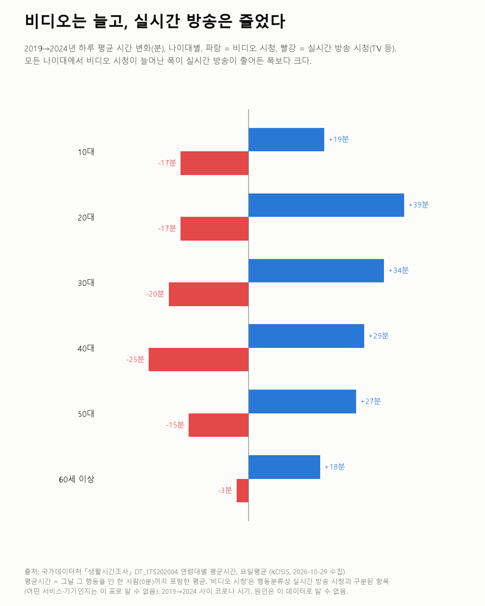

20대 '비디오 시청' 하루 32분 → 71분
생활시간조사 2019·2024

질문
2019년과 2024년 사이, 나이대별로 하루에 비디오 시청·실시간 방송 시청·SNS 교제·모바일 게임에 쓰는 시간은 어떻게 바뀌었나? (크리에이터·인플루언서 콘텐츠를 보는 쪽의 시간이 늘었나?)
사용 데이터와 출처
| 데이터 | 출처 | 쓰임 |
|---|---|---|
| 연령대별 평균시간 (KOSIS DT_1TS202004) | 국가데이터처 「생활시간조사」 | 나이대별 행동 세분류 시간, 2019·2024년, 요일평균, 남녀 계 |
- 생활시간조사는 5년마다 하루를 10분 단위 일지로 적는 조사다.
- 평균시간은 그날 그 행동을 하지 않은 사람(0분)까지 포함한 평균이다.
- '비디오 시청'은 행동분류에서 '실시간 방송 시청'과 따로 나뉜 항목이다. 이름으로 보면 실시간이 아닌 영상 보기지만, 어떤 서비스·기기인지(유튜브, OTT 등)는 이 표로 알 수 없다.
- 세분류는 2019년 분류에서 생긴 항목이라 2019년과 2024년만 비교했다.
- 검증: 모든 나이대·연도에서 미디어 여가 하위 항목의 합이 미디어 여가와 같은지 확인했다(±5분).
- 교차 확인: 같은 조사의 10세 이상 표(DT_1TS202001)에서 수면시간 2019년 8시간 12분 → 2024년 8시간 4분은 보도 수치와 같다. 같은 표의 10세 이상 비디오 시청은 15분 → 40분이다.
- 수집일: 2026-10-29 (KOSIS 오픈API).
인사이트
1. 20대의 하루 평균 비디오 시청은 2019년 32분에서 2024년 71분으로 늘었다. 나이대 중 가장 길고, 가장 많이 늘었다(+39분).
2. 모든 나이대에서 늘었다. 10대 39→58분, 30대 16→50분, 40대 11→40분, 50대 8→35분, 60세 이상 4→22분이다.
3. 실시간 방송 시청(TV 등)은 모든 나이대에서 줄었다. 20대는 46분에서 29분이 됐다. 다만 비디오가 늘어난 폭이 실시간 방송이 줄어든 폭보다 모든 나이대에서 크다. 20대의 미디어 여가 전체는 108분에서 127분으로 늘었다.
4. SNS 교제와 모바일 게임은 거의 그대로다. 20대 SNS 교제(사회관계망을 통한 교제)는 8분 → 9분, 모바일 게임은 12분 → 13분이다. 20대 온라인·PC 게임은 32분 → 40분으로 늘었다.
5. 그사이 수면은 조금 줄었다. 20대 8시간 27분 → 8시간 17분, 19세 이상 8시간 9분 → 8시간 1분이다.

한계
이 데이터로 말할 수 없는 것
- '비디오 시청'이 무엇을 보는지 모른다. 유튜브, OTT, 다시보기 등이 어떻게 나뉘는지 이 표로 확인할 수 없다. 크리에이터 콘텐츠 시청 시간이라고 단정할 수 없다.
- 일지에 적힌 '주된 행동'에 가까운 값일 수 있다. 다른 일을 하면서 영상을 틀어 둔 시간은 덜 잡힐 수 있다. 이 표가 주행동 기준인지 동시행동을 포함하는지는 확인하지 못했다.
- 두 시점 비교다. 2019년과 2024년 사이에는 코로나 시기가 있다. 그 영향인지, 계속되는 흐름인지는 가를 수 없다.
- 이 표는 60세 이상을 더 나누지 않는다. 60대·70대 차이는 볼 수 없다.
- 원인은 말하지 않는다. 많이 보는 것이 좋다·나쁘다는 판단도 하지 않는다.
전제 기록
데이터를 보기 전에 적어둔 것, 그리고 보고 나서 바꾼 것
- 전제 기록(premises)(데이터를 받기 전에 작성)를 따랐다. 전제 2('비디오 시청'의 정의)는 확인하지 못해 한계 첫 줄에 남겼다.
- 받은 뒤 바뀐 점: 이 표에는 60대·70대·80세 이상 세분 값이 없어 '60세 이상' 하나로 썼다.